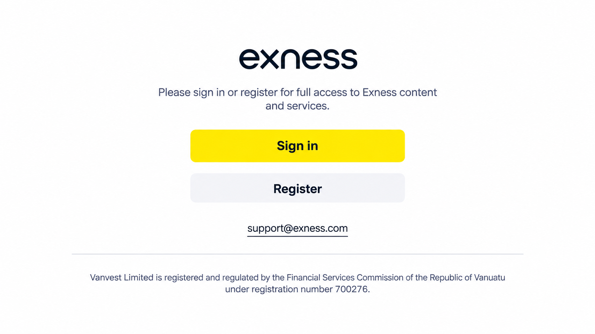

Drag and Drop Website Builder
Exness Login is the primary authentication gateway that connects traders to their Personal Area (PA) and multi-asset trading terminals across web, desktop, and mobile devices. Built with layered security protocols and seamless platform synchronization, the login ecosystem allows users to manage accounts, execute trades, and monitor funds in real time.
Understanding the Exness Login Architecture
The authentication system separates administrative account management from live market execution to enhance user security and operational flexibility.
• Personal Area (PA) Credentials. Users sign in to the main dashboard using their registered email address and a master password. This central hub controls deposits, withdrawals, identity verification, and sub-account creation.
• Trading Terminal Credentials. Individual trading accounts on MetaTrader 4 (MT4) and MetaTrader 5 (MT5) require a unique trading account number, a dedicated trading password, and a specific server name. Separating these credentials prevents unauthorized fund transfers even if a third-party terminal session is compromised.
• Cross-Platform Synchronization. A single login session syncs account data across the browser-based Exness Terminal and the mobile Exness Trade App. Traders can open a position on a desktop computer and monitor or close it immediately from a smartphone.
Step-by-Step Web Login Process
Accessing the web portal takes less than a minute when using verified credentials on the official domain.
• Navigate to the Official Portal. Open a secure web browser and visit the official Exness Sign-In Page. Always verify the SSL padlock icon and URL spelling to avoid phishing clones.
• Enter Registered Credentials. Input the email address linked to your profile along with your case-sensitive password. Double-check keyboard caps lock settings before submitting.
• Complete Security Verification. Enter the six-digit verification code sent via your active security method, such as SMS, email, or an authenticator app.
• Access the Personal Area. Click the Sign In button to load your main dashboard. From here, you can switch between live and demo accounts or launch web trading terminals.
Logging In via Mobile Devices
Mobile access is designed for speed and biometric convenience, catering to traders who monitor markets on the move.
• Download the Official Application. Install the Exness Trade app from the Google Play Store or Apple App Store.
• Input Account Details. Launch the app, tap Sign In, and enter your registered email and PA password.
• Configure Biometric Shortcuts. After your initial login, enable fingerprint scanning or facial recognition in the app settings. Biometric authentication speeds up future logins while keeping session tokens encrypted on your device.
• Passcode Protection. Set up a custom four-to-six-digit app passcode as a fallback security layer whenever biometric sensors are unavailable.
Connecting to MT4, MT5, and WebTerminal
Traders who prefer MetaTrader platforms must retrieve specific server details from their Personal Area before logging in.
• Locate Account Credentials. Log in to your Personal Area, expand the Trading tab, and click the gear icon or dropdown on your chosen account card. Note down the exact MT4/MT5 Login Number and Server Name.
• Desktop and Mobile MT4/MT5 Login. Open the MetaTrader application, select Login to Trade Account, and search for the exact Exness server listed in your dashboard. Paste your trading account number, type your trading password, and confirm the connection.
• Browser-Based WebTerminal Login. Launch the Exness MetaTrader WebTerminal without downloading software. Choose either the MT4 or MT5 tab, enter your trading login, password, and server, and start charting immediately.
Core Features Inside the Exness Personal Area
Once authenticated, users gain full control over their financial operations and analytical tools.
Feature Category Key Capabilities Available After Login
Account Management Open new Standard, Pro, Raw Spread, or Zero accounts, adjust leverage settings, and reactivate archived demo accounts.
Fund Operations Execute instant deposits and withdrawals using bank cards, e-wallets, wire transfers, or cryptocurrency gateways.
Security & Profile Complete Know Your Customer (KYC) document uploads, update passwords, and switch two-factor authentication channels.
Trading Terminals Launch the built-in Exness Terminal or copy credentials to connect external MetaTrader desktop and mobile apps.
Analytics & History Review complete transaction ledgers, check open positions, and access real-time market news and economic calendars.
Security Protocols and Account Protection
Protecting financial accounts requires strong authentication layers that block unauthorized access. Details on available verification channels can be reviewed in the Exness Help Center.
• Two-Factor Authentication (2FA). Every sensitive action—including logins from new devices and fund withdrawals—requires confirmation via a six-digit one-time password (OTP).
• Multiple Security Types. Users can choose between Email verification, SMS text codes, Push Notifications through the Exness Trade app, or third-party TOTP Authentication Apps like Google Authenticator.
• Unique Support PIN. Each account generates an alphanumeric Support PIN inside the Personal Area. Customer service representatives use this code to verify your identity before discussing account details.
• Automated Withdrawal Locks. If a user resets their security type via face scan or video verification after losing a device, the system automatically disables withdrawals for 24 hours to prevent theft.
Common Login Issues and Troubleshooting
Even experienced users occasionally encounter access errors. Most login hurdles can be resolved quickly using built-in recovery tools.
• Forgotten Password Recovery. Click the I forgot my password link on the sign-in screen, enter your registered email, and follow the verification prompts to create a new password.
• Incorrect Server Selection on MT4/MT5. A common error when logging into MetaTrader is selecting the wrong server (e.g., choosing Exness-MT5Trial instead of Exness-MT5Real). Always copy the exact server string from your Personal Area.
• Delayed OTP Codes. If SMS or email verification codes do not arrive within two minutes, check your spam folder, verify mobile network reception, or request a resend.
• Lost Access to 2FA Device. Users who lose their phone can reset their security method directly in the Personal Area using automated Face Scan Verification or by scheduling a short Video Chat Verification with support.
• Regional Restrictions. Exness does not provide services to residents of certain jurisdictions, including the United States, the United Kingdom, and the European Union. Attempting to log in from restricted regions or via blocked IP addresses may trigger connection errors.
Best Practices for Safe Account Access
Maintaining long-term account security depends on disciplined user habits alongside platform encryption.
• Bookmark Official URLs. Save the verified Exness login page in your browser bookmarks rather than clicking links in unsolicited emails or social media ads.
• Use Strong, Unique Passwords. Combine uppercase letters, lowercase letters, numbers, and symbols, and never reuse passwords from other websites.
• Avoid Public Wi-Fi. Never log in to financial dashboards or execute trades over unsecured public networks without a trusted VPN.
• Keep Credentials Private. Official Exness staff will never ask for your password, OTP codes, or personal identification details via chat, email, or phone.
Drag and Drop Website Builder